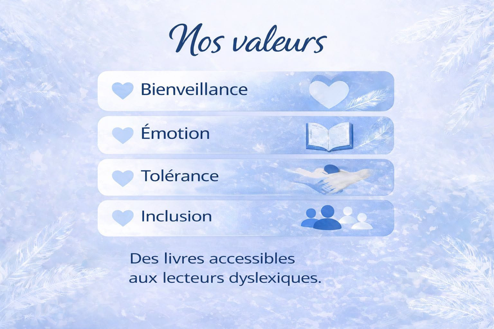
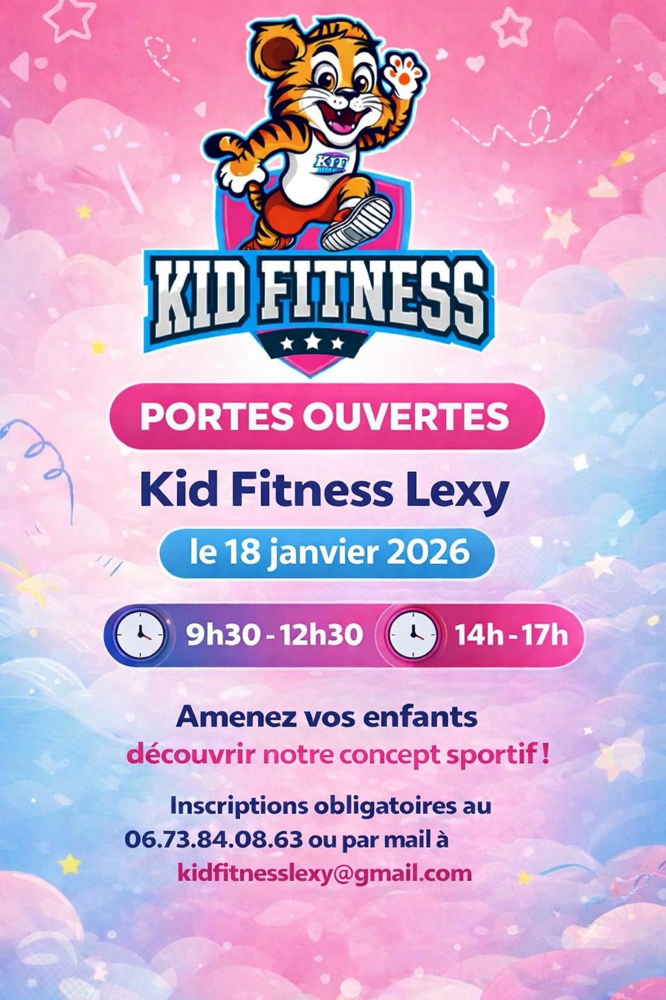
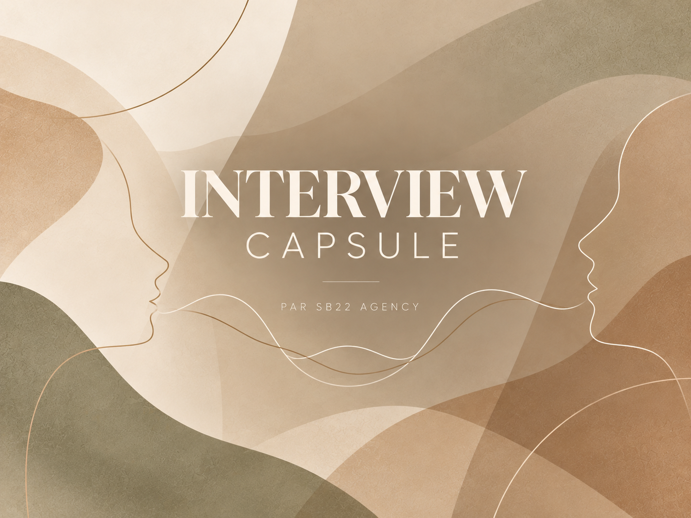

Social Media Management
01 / Aménagement intérieur
Kuba Home
Une vitrine digitale premium pour les créations de Kuba Home.
Voir les réalisationsPublications, identité visuelle, campagnes Meta Ads et interviews : les réalisations SB22.
Une vitrine digitale premium pour les créations de Kuba Home.
Voir les réalisations
Faire connaître la maison d’édition et son univers sur les réseaux sociaux.
Voir les réalisations
Une identité éditoriale visible aussi dans l’espace physique.
Voir les réalisations
Promouvoir les journées portes ouvertes et encourager les inscriptions.
Voir les réalisations
Développer la visibilité locale de la microcrèche.
Voir les réalisations
Deux vidéos originales pour présenter l’expérience et les temps forts de l’Atelier RESPIRA.
Voir les réalisations
Un format d’interview intime qui laisse place aux confidences.
Voir les réalisations